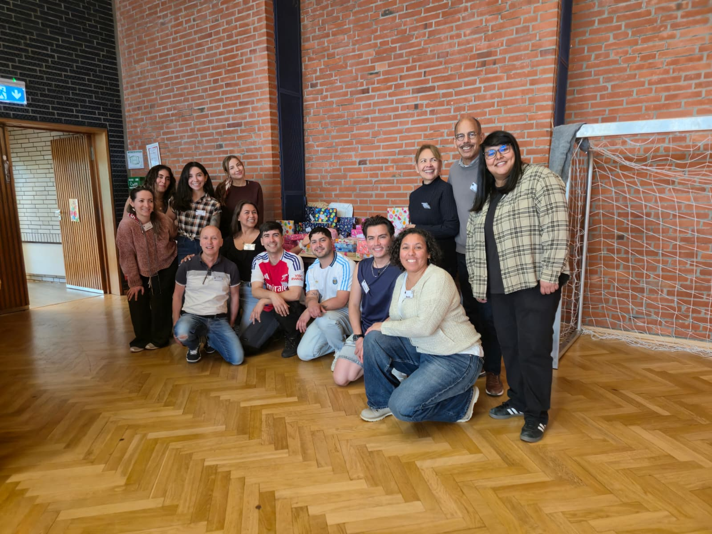
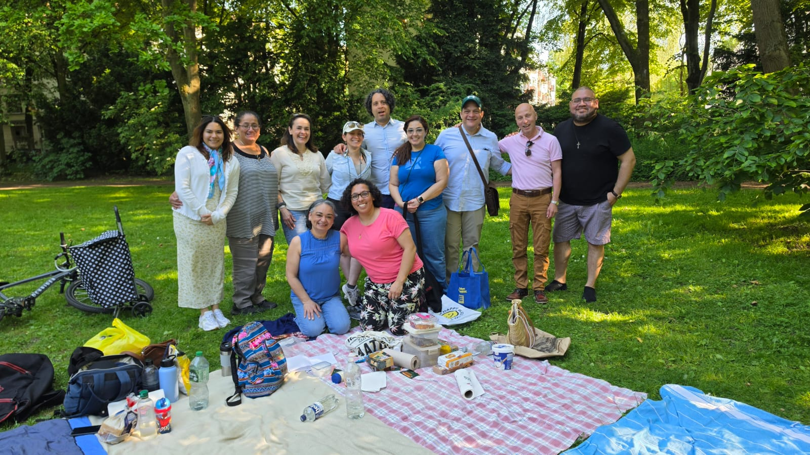
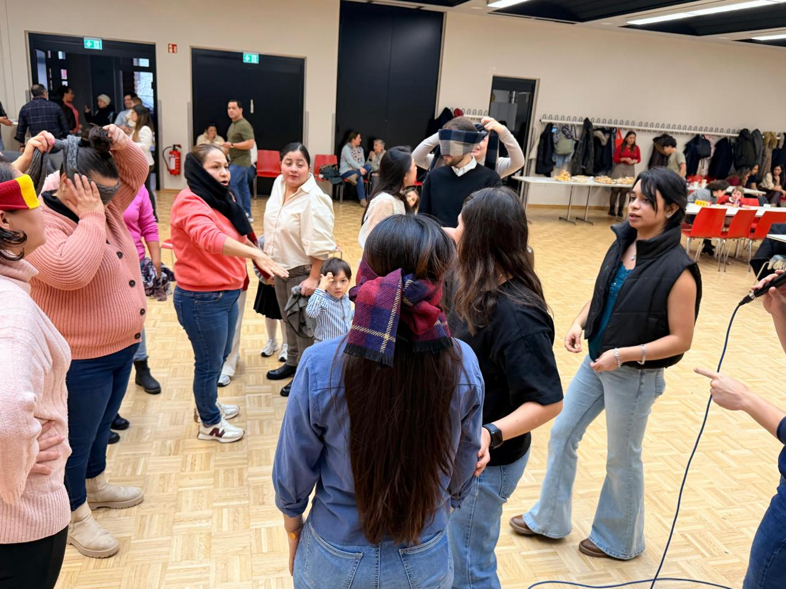
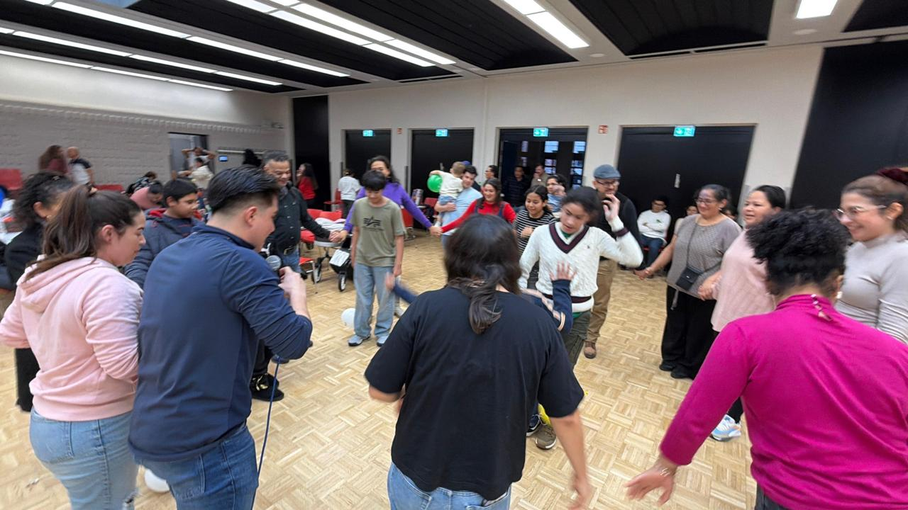
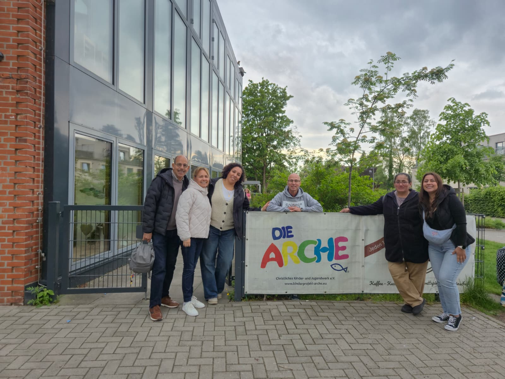

Sobre Nosotros
Una comunidad que sirve con fe, amor y compromiso.
¿Quiénes somos?
“Jesús y María en Acción” es un grupo católico hispanohablante en Hamburgo, dedicado al servicio y apoyo de personas necesitadas dentro de nuestra comunidad.
Nuestro grupo nace con el deseo de ayudar al prójimo mediante acciones solidarias, actividades comunitarias y acompañamiento humano y espiritual.

Una comunidad que se une
Creemos en la fuerza de la comunidad. A través de convivios, encuentros y espacios de integración, buscamos fortalecer los lazos entre familias, voluntarios y personas que desean caminar juntas en la fe y el servicio.

Amar es Servir
Nuestro lema “Amar es Servir” expresa el corazón de nuestra misión: amar no es solo un sentimiento, sino una acción concreta y desinteresada orientada a ayudar al prójimo y transformar positivamente su entorno.

Compartimos esperanza
A lo largo de nuestro camino hemos organizado actividades de apoyo comunitario, entrega de juguetes, encuentros familiares y momentos de convivencia, buscando compartir no solo ayuda material, sino también alegría, unión y esperanza.

Servicio en acción
Cada actividad requiere manos dispuestas, corazones generosos y personas comprometidas. Nuestro trabajo se construye con la colaboración de voluntarios que aportan su tiempo, talentos y deseo de servir.

Mirando hacia el futuro
Actualmente, nuestro objetivo es continuar creciendo como comunidad organizada, fortalecer nuestra relación con la Iglesia Católica en Hamburgo y desarrollar proyectos que beneficien a personas y familias en situación de necesidad.

Una misión abierta a todos
Mantenemos nuestras puertas abiertas a toda persona que necesite ayuda, acompañamiento u orientación, así como a quienes deseen unirse y servir junto a nosotros.
Quiero formar parte